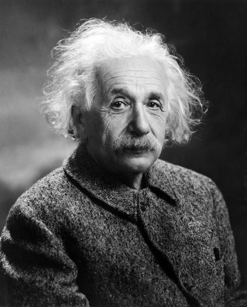

Albert Einstein
Physicist | Nobel Prize Winner

About
Albert Einstein (1879-1955) was a German-born physicist famous for developing the Theory of Relativity and the equation E = mc². He won the 1921 Nobel Prize in Physics for explaining the Photoelectric Effect.
In 1905 (his “miracle year”), he published groundbreaking papers on relativity, light, and atoms. He later developed general relativity (1915), changing our understanding of gravity and the universe.
Born in Germany, he later lived in Switzerland and the United States, leaving Germany in 1933 due to the rise of Adolf Hitler. Einstein also contributed to quantum theory but disagreed with some of its ideas.
Skills
- Mathematical thinking
- Theoretical reasoning
- Problem-solving
- Creativity & imagination
- Critical thinking
- Persistence
Awards & Recognition
Albert Einstein received the 1921 Nobel Prize in Physics for his discovery of the photoelectric effect, which played a key role in the development of quantum theory. Notably, he was not awarded the prize for relativity at the time, as it was still debated.
In 1925, he was honored with the Copley Medal from the Royal Society, one of the oldest and most prestigious scientific awards, recognizing his outstanding contributions to theoretical physics.
In 1926, Einstein received the Gold Medal of the Royal Astronomical Society for his work on relativity, which significantly advanced our understanding of gravity and the structure of the universe.
In 1929, he was awarded the Max Planck Medal by the German Physical Society, one of the highest honors in physics, for his profound impact on modern theoretical science.